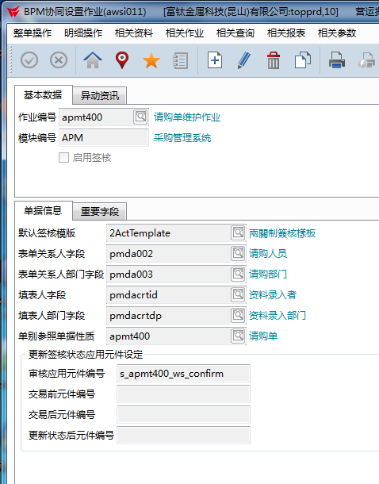

【C03】请购作业流程（非BOM无料号请购流程）
回到【BPM流程开发设计现况总览】版本变更需求说明
2017-11-08 10:00，采购彭晓霞转述郭副总要求：请购作业流程（非BOM无料号请购流程），在流程中部门主管后加签副总。原审核流程是：（1）发起人，（2）发起人填单，（3）部门主管，通知采购，（4）回传T100
预计修改后是：（1）发起人，（2）发起人填单，（3）部门主管，（4）副总签核，通知采购，（5）回传T100
2017-12-26改动：（1）发起人，（2）发起人填单，（3）部门主管 如果是工程部门提交的吴文益吴文清两人随意一个签核就可以，（4）副总签核，通知采购，（5）回传T100
主要版本变更
- 由于发起人得选择部门主管在t100没有选项所以得在流程里在加一个发起人才可以到bpm选择部门主管
- 李小艳说（2017-5-27）经测试之后可以使用
签核流程
- 发起人
- 发起人填单
- 部门主管，通知采购
- 回传T100
表单名称
請購單(apmt400)


补充说明

狀況處置
2017-09-06 唐婷婷无法继续签核流程
表单页面主管选择不可点，导致无法继续派送；后来以为是要手动输入，结果依旧不可派送（其实即使手动输入，不通过开窗，只要数据对，也应该可以继续）
同时表单中的会签部门选择按钮为灰色不可用状态，但是流程中有设置当前用户可编辑。
顾问建议：要求开窗选的，栏位编辑可以关掉。
流程里面修改了控件的权限，需要新发起的流程才会生效，旧的流程是按照旧的流程走完
张韬到现场协助，重新发起一次流程，已解决
因BPM人员组织中部分没有部门主管和直属主管没法签核